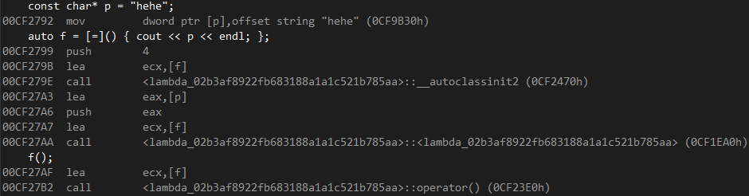

C++11 lambda表达式
如果想要对一个数据集合中的元素进行排序，可以使用std::sort方法
但在想要自定义比较规则时必须提供仿函数对象
C++11 中lambda表达式可以简化这个过程：
1 | class AAA { |
lambda表达式是一个匿名函数，可借助auto将其赋值给一个变量，然后调用
表达式格式
[捕捉列表] (参数列表) mutable -> 返回值类型 { 函数体 }
[]捕捉列表
获取父作用域的变量，供函数使用，编译器根据[]来判断接下来
的代码是否为lambda函数
[a, b]: 以值的形式获取父作用域的变量a,b
[=]: 以值的形式获取父作用域的所有变量, 变量的属性都为const(包括this)
[=, a]: 错误写法，捕捉a重复
[=, &a]: 正确写法，除了a，其他以值的形式获取父作用域变量， a以引用的形式获取
[&] : 以引用的形式获取父作用域的所有变量，(包括this)
[this]: 获取成员变量的this指针，只能在成员函数内部使用
()参数列表
如果不需要参数传递，则可以连同()一起省略
mutable
可选，删除捕捉列表中以值的形式获取的变量的const属性，使用该修饰符时，参数列表不可省略(即使参数为空)
->返回值类型
用追踪返回类型形式声明函数的返回值类型，没有返回值时此部分可省略。返回值类型明确情况下，也可省略，由编译器对返回类型进行推导
{}函数体
在函数体内，可以使用参数外，以及所有捕获到的变量。
使用注意事项
- 在块作用域以外的lambda函数捕捉列表必须为空
- 在块作用域中的lambda函数仅能捕捉父作用域中局部变量
1 | void (*PF)(); |
lambda底层

通过汇编我们可以清楚的看到，编译器会自动生成一个类，在其中重载了operator()
C++11 auto
C++11中，auto声明的变量可以由编译器在编译时期推导而得，可以与lambda表达式，或范围for搭配使用
使用auto时必须进行初始化，编译阶段需根据初始化表达式来推导auto的实际类型
auto是一个类型声明时的“占位符”，编译器在编译期会将auto替换为变量实际的类型
auto和auto*没有任何区别，但用auto声明引用类型时则必须加&
声明多个变量时，变量必须类型相同，否则会报错，编译器只对第一个进行推导，然后用推导出来的类型定义其他变量
auto不能作为函数的参数，不能直接用来声明数组，不能定义类的非静态成员变量
实例化模板时不能使用auto作为模板参数
C++11 decltype
根据表达式的实际类型推演出定义变量时所用的类型
1 | void Fuc(int i) {} |
C++11 基于范围的for循环
for循环迭代的范围必须是确定的，对于数组而言，就是数组中第一个元素和最后一个元素的范围；对于类而言，应该提供begin和end方法，begin和end就是for循环迭代的范围
1 | void Test(int arr[]) { |
迭代的对象要实现++和==的操作